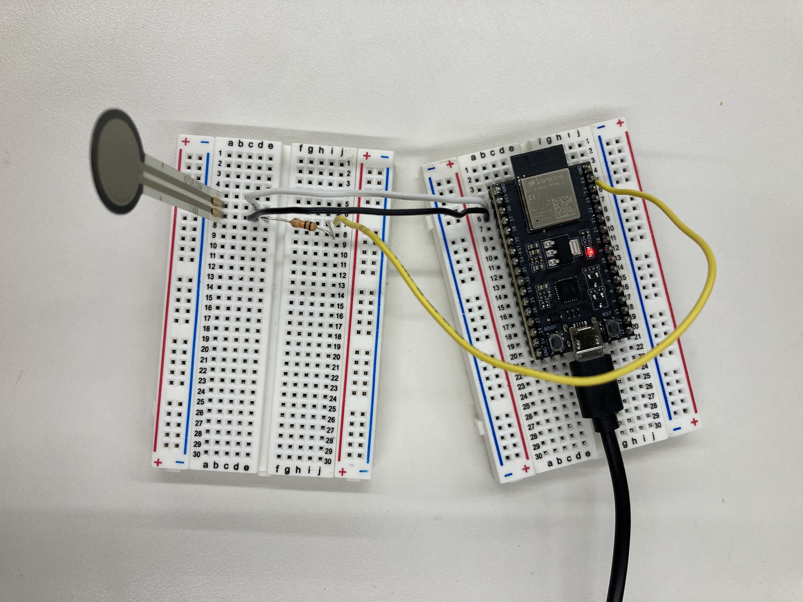

Week 9: Radio, Wifi, Bluetooth
Task: Program one or more microcontroller(s) to obtain and respond to information from the internet or radio.
Skills used: ADD
This week I tested using an ESP32 to connect to wifi. I created two buttons, each of which turns on an LED.
FSR Sensor Prototypes for Final Project
In preparation for my final project, which will use pressure sensors, I tested connecting an FSR sensor to an ESP32. I based my code off of this example.

#define FORCE_SENSOR_PIN_1 36 // ESP32 pin GIOP36 (ADC0): the FSR and 10K pulldown are connected to A0
void setup() {
Serial.begin(9600);
}
void loop() {
int analogReading1 = analogRead(FORCE_SENSOR_PIN_1);
Serial.print("The force sensor value for 1 = ");
Serial.print(analogReading1); // print the raw analog reading
Serial.println();
delay(1000)